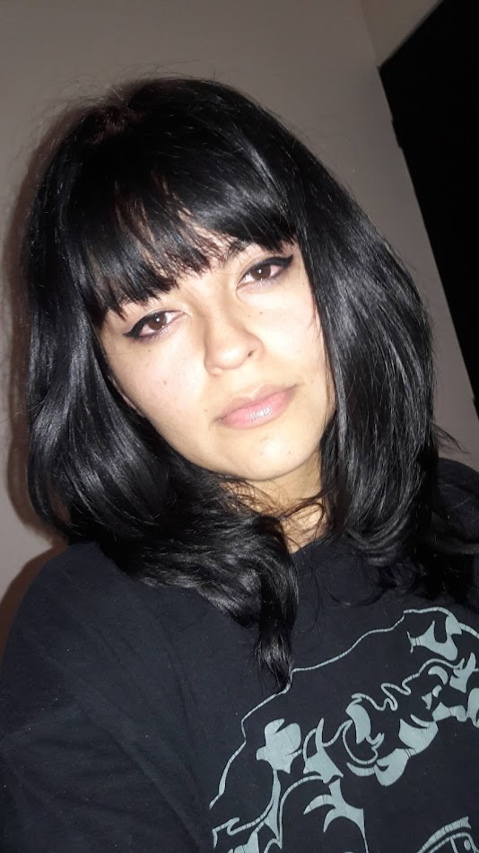

✩₊˚.⋆☾⋆⁺₊✧‧₊˚✩ ₊˚⊹♡✩°｡⋆✩₊˚.⋆☾⋆⁺₊✧‧₊˚✩ ₊˚⊹♡✩°｡⋆✩₊˚.⋆☾
Gabriela A. Nuñez
Me gusta que me digan Gaby, tengo 28 años de edad y nací un 15 de Enero de 1996, en Ecatepec.
Tengo un hijo pequeño y soy la mayor de 2 hermanas.
Me gusta la Arquitectura y Tomar fotografías
Fui costurera por varios años.
En secundaria tomé taller de industria del vestido y después me inscribí a una escuela de artes y
oficios para seguir aprendiendo a coser porque es algo que siempre me ha interesado.
Mis Pasatiempos
Genero favorito: novela
Me gusta Leer desde que era niña, ahora no lo hago tanto por falta de tiempo pero me hace muy feliz.
Me gusta Leer desde que era niña, ahora no lo hago tanto por falta de tiempo pero me hace muy feliz.
Cámara : finepixz10F
Apesar de que mi cámara es digital y yo soy muy "amateur", disfruto mucho tomar fotografías y observarlas.
Apesar de que mi cámara es digital y yo soy muy "amateur", disfruto mucho tomar fotografías y observarlas.
Especialidad: Pan de Plátano con Chispas
Sé cocinar pocos postres, sé que la repostería es compleja y requiere mucha práctica, asi que solo preparo postres de vez en cuando.
Sé cocinar pocos postres, sé que la repostería es compleja y requiere mucha práctica, asi que solo preparo postres de vez en cuando.
Este es mi hobbie Favorito
Tejer y Bordar eran mi nueva área de aprendizaje antes de comenzar en el mundo TI. Coser era mi trabajo, a eso me dediqué muchos años y me encanta. Soy fan de la moda vintage y me gusta leer y aprender sobre los antiguos metodos de producción y elaboración textil.
Tejer y Bordar eran mi nueva área de aprendizaje antes de comenzar en el mundo TI. Coser era mi trabajo, a eso me dediqué muchos años y me encanta. Soy fan de la moda vintage y me gusta leer y aprender sobre los antiguos metodos de producción y elaboración textil.
habilidades: 9%
Me gusta Bailar, pero no soy muy buena haciendolo y tampoco salgo a muchas fiestas, es mi actividad fisica favorita.Tomé clases de Salsa hace unos años.
Me gusta Bailar, pero no soy muy buena haciendolo y tampoco salgo a muchas fiestas, es mi actividad fisica favorita.Tomé clases de Salsa hace unos años.
☆₊˚★ ₊˚✩☆
☆₊˚★ ₊˚✩☆ Mi Música Favorita ☆₊˚★ ₊˚✩☆
Mi top 5 de canciones favoritas del momento es:
☆₊˚★ ₊˚✩☆